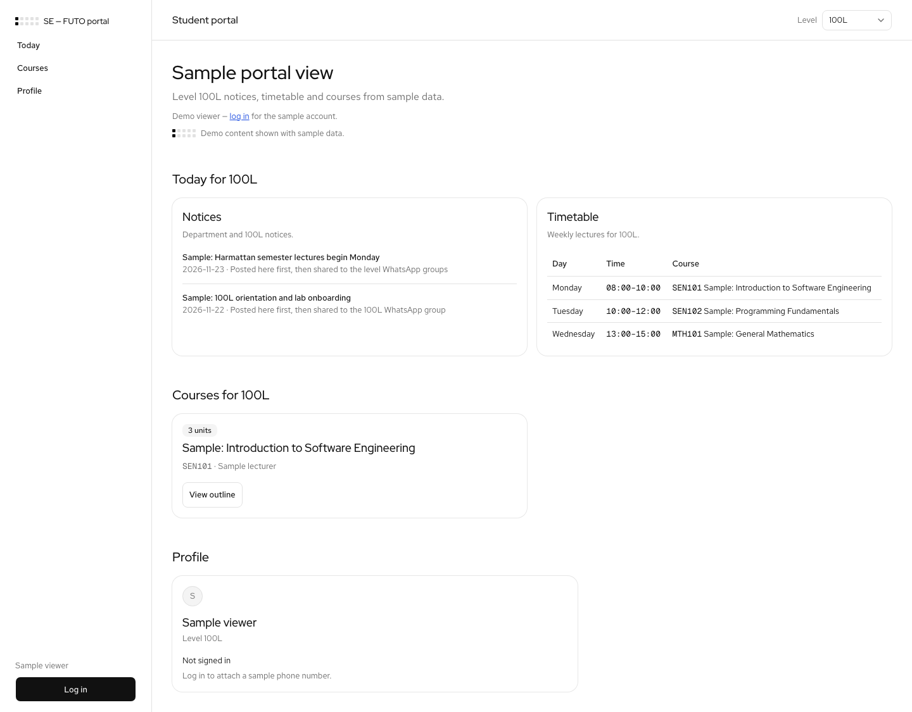
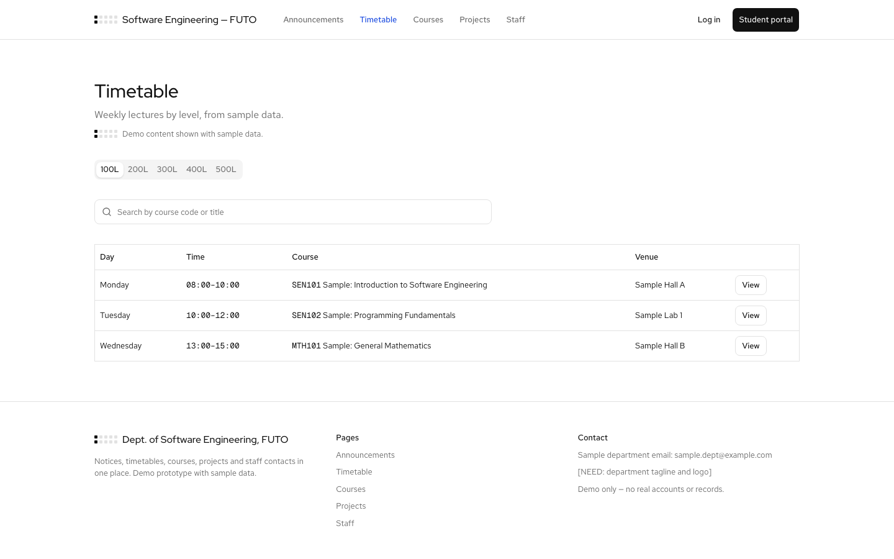

One place for notices, timetables, courses and student builds.
Notices, timetable and courses for 100L — posted here first.


Every notice lands here before the class chats.
One weekly grid per level.
Code, repos and the teams behind them.
Demo for the HOD · sample data.